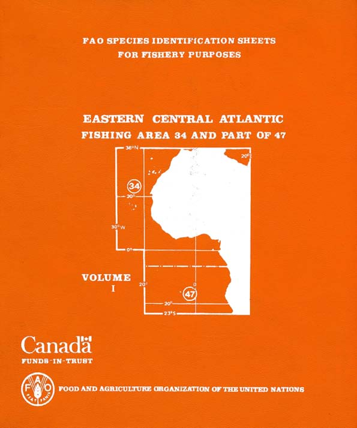

|  |
FAO Species Identification Guide for Fishery
Purposes EASTERN CENTRAL ATLANTIC
|
|
FOOD AND AGRICULTURE ORGANIZATION OF THE UNITED NATIONS Rome, 1981 |
| |
|
|
|
|
| The designations employed and the presentation of material in this publication do not imply the expression of any opinion whatsoever on the part of the Food and Agriculture Organization of the United Nations concerning the legal status of any country, territory, city or area or of its authorities, or concerning the delimitation of its frontiers or boundaries. |
|
FOREWORD This publication is the fourth in a series initiated by FAO which began with the Mediterranean/Black Sea (1973, two volumes) and continued with the Eastern Indian Ocean/Western Central Pacific (1974, four volumes) and the Western Central Atlantic (1978, seven volumes). This series is aimed at establishing a worldwide annotated and illustrated inventory of aquatic species of interest to fisheries that should provide the fishery worker with a tool for the correct identification of the species occurring in his/her area, an international system of vernacular species names and elementary data on the fisheries for these species. The present set of Identification Sheets primarily covering the area of concern to the CECAF Committee, is the result of the joint efforts of more than 60 experts from the CECAF Region and elsewhere in the world, who have generously contributed their time and experience to a common goal. The execution of the project was closely coordinated with the preparation of the "Check-List of the Fishes of the Eastern Tropical Atlantic (CLOFETA)", sponsored by Unesco, so as to ensure consistency of nomenclature in these two complementary publications. The fact that every family or group of resources has been treated by an authority on the subject makes this publication a unique assemblage of firsthand information which could not have been brought together by any individual author. Furthermore, it is the only recent catalogue of species of interest to fisheries covering the Eastern Central Atlantic region in its entirety, comprising the Fishing Area 34 as well as the northern part of Fishing Area 47. Although the fishery resources of this region are, in general, reasonably well known, there are still considerable gaps in information on distribution, abundance and biology of many species, which are, to a large extent, the result of incorrect or insufficient identification of species in routine fishery work. With the growing need for proper management of fish stocks, more accurate detailed basic data are required on individual species. The user of the sheets can contribute significantly to the improvement of this reference work by communicating his/her practical experiences with the Sheets to FAO HO in Rome, to the CECAF Committee in Dakar, and/or to the respective authors. In this way, the systematist and the fishery worker will benefit from each other's work; and it is only through a continuing cooperation of this kind that these Identification Sheets will remain up-to-date and useful. The production of this set of Species Identification Sheets would not have been possible without the generous financial support of the Canadian international Development Agency (CIDA) in the framework of the FAO/Canada Government Cooperative Programme, Project GCP/INT/180/CAN, and the valuable collaboration of the Department of Fisheries and Oceans, Canada, who have printed the document. Scientific editing was considerably facilitated through the cooperation of the Huntsman Marine Laboratory, St. Andrews, Canada. A. Lindquist |
TABLE OF CONTENT
INTRODUCTORY MATERIALFAO PROGRAMME OF SPECIES IDENTIFICATION SHEETS FOR FISHERY PURPOSESBONY FISHES
INTRODUCTION TO THIS EDITION
USER'S GUIDETECHNICAL TERMS
GENERAL REMARKS
AID TO THE IDENTIFICATION OF FAMILIES OCURRING IN THE EASTERN CENTRAL ATLANTICAcanthuridae
Albulidae
Alepisauridae
Alepocephalidae
Anguillidae
Antennariidae
Anthiidae
Argentinidae
Ariidae
Ariommidae
Ateleopodidae
Atherinidae
Aulopidae
Aulostomidae
Balistidae
Batrachoididae
Belonidae
Berycidae
Blenniidae
Bothidae
Bramidae
Branchiostegidae
Callionymidae
Carangidae
Centracanthidae
Centrolophidae
Cepolidae
Chaetodontidae
Citharidae
Clinidae
Clupeidae
Congridae
Coryphaenidae
Cynoglossidae
Dactylopteridae
Diodontidae
Diretmidae
Drepanidae
Echeneidae
Eleotridae
Elopidae
Emmelichthyidae
Engraulidae
Ephippidae
Exocoetidae
Fistulariidae
Gadidae
Gempylidae
Gerreidae
Gobiidae
Gonostamatidae
Grammistidae
Hemiramphidae
Holocentridae
Istiophoridae
Kuhliidae (=Duleidae)
Kyphosidae
Labridae
Lamprididae
Lethrinidae
Lobotidae
Lophiidae
Lutjanidae
Macrorhamphosidae
Macrouridae
Malacanthidae
Megalopidae
Merlucciidae
Molidae
Monodactylidae
Moridae
Moronidae
Mugilidae
Mullidae
Muraenesocidae
Muraenidae
Myctophydae
Nomeidae
Ogcocephalidae
Ophichthidae
Ophidiidae (including Brotulidae)
Paralepididae
Percophidae
Periophthalmidae
Peristediidae
Platycephalidae
Polymixiidae
Polynemidae
Pomacanthidae
Pomacentridae
Pomadasyidae
Pomatomidae
Priacanthidae
Psettodidae
Rachycentridae
Scaridae
Sciaenidae
Scomberesocidae
Scombridae
ScophthalmidaeCHIMAERAS
Scorpaenidae
Serranidae
Soleidae
Sparidae
Sphyraenidae
Stromateidae
Synodontidae
Tetragonuridae
Tetraodontidae
Trachichthyidae
Trachinidae
Trichiuridae
Triglidae
Uranoscopidae
Xiphiidae
ZeidaeGENERAL REMARKSSHARKS
KEY TO FAMILIES, GENERA AND SPECIES REPORTED FROM THE AREA
LIST OF FAMILIES AND SPECIES OCCURRING IN THE AREATECHNICAL TERMS AND PRINCIPAL MEASUREMENTS USED
GENERAL REMARKS
KEY WITH-PICTURE GUIDE TO FAMILIES OCCURRING IN THE AREA
LIST OF SPECIES OCCURRING IN THE AREAAlopiidae
CarcharhinidaeBATOID FISHES
Cetorhinidae
Chlamydoselachidae
Echinorhinidae
Ginglymostomatidae
Hemigaleidae
Hexanchidae
Lamnidae
Leptochariidae
Mitsukurinidae
Odontaspididae
Oxynotidae
Pseudocarchariidae
Pseudotriakidae
Rhiniodontidae
Scyiiorhinidae
Sphyrnidae
Squalidae
Squatinidae
TriakidaeTECHNICAL TERMS AND PRINCIPAL MEASUREMENTS USEDLOBSTERS
GENERAL REMARKS
KEY WITH PICTURE GUIDE TO FAMILIES OCCURRING IN THE AREA
LIST OF SPECIES OCCURRING IN THE AREADasyatidae
Gymnuridae
Mobulidae
Myliobatidae
Platyrhinidae
Pristidae
Rajidae
Rhinobatidae
Rhinopteridae
Rhynchobatidae
TorpedinidaeTECHNICAL TERMS AND PRINCIPAL MEASUREMENTS USED
GENERAL REMARKS
GUIDE TO FAMILIES OCCURRING IN THE AREA
LIST OF SPECIES OCCURRING IN THE AREANephropidae
Palinuridae
Scyllaridae
SHRIMPS AND PRAWNSTECHNICAL TERMSTRUE CRABS
GENERAL REMARKS
LIST OF SPECIES OCCURRING IN THE AREAAristeidae
Crangonidae
Hyppolytidae
Nematocarcinidae
Palaemonidae
Pandalidae
Pasiphaeidae
Penaeidae
Sicyoniidae
SolenoceridaeTECHNICAL TERMSSTOMATOPODS
GENERAL REMARKS
LIST OF SPECIES OCCURRING IN THE AREACalappidae
Cancridae
Gecarcinidae
Geryonidae
Grapsidae
Homolidae
Majidae
Ocypodidae
Portunidae
XanthidaeTECHNICAL TERMSBIVALVES
LIST OF SPECIES OCCURRING IN THE AREALysiosquilliae
SquillidaeTECHNICAL TERMS AND GENERAL REMARKSGASTROPODS
TAXONOMIC LIST OF EDIBLE SPECIES OCCURRING -IN THE AREA
PICTURE GUIDE TO EDIBLE BIVALVES OCCURRING IN THE AREATECHNICAL TERMS AND GENERAL REMARKSCEPHALOPODS
TAXONOMIC LIST OF EDIBLE SPECIES OCCURRING -IN THE AREA
PICTURE GUIDE TO EDIBLE BIVALVES OCCURRING IN THE AREATECHNICAL TERMSSEA TURTLES
GENERAL REMARKS
KEY WITH PICTURE GUIDE TO FAMILIES OCCURRING IN THE AREA
LIST OF SPECIES OCCURRING IN THE AREALoliginidae
Octopodidae
Ommastrephidae
Onychoteuthidae
Sepiidae
Sepiolidae
ThysanoteuthidaeTECHNICAL TERMS
GENERAL REMARKS
GUIDE TO FAMILIES AND GENERA OCCURRING IN THE AREA
PICTURE GUIDE TO SPECIES OCURRING IN THE AREAChelonidae
Dermochelidae
INDEX